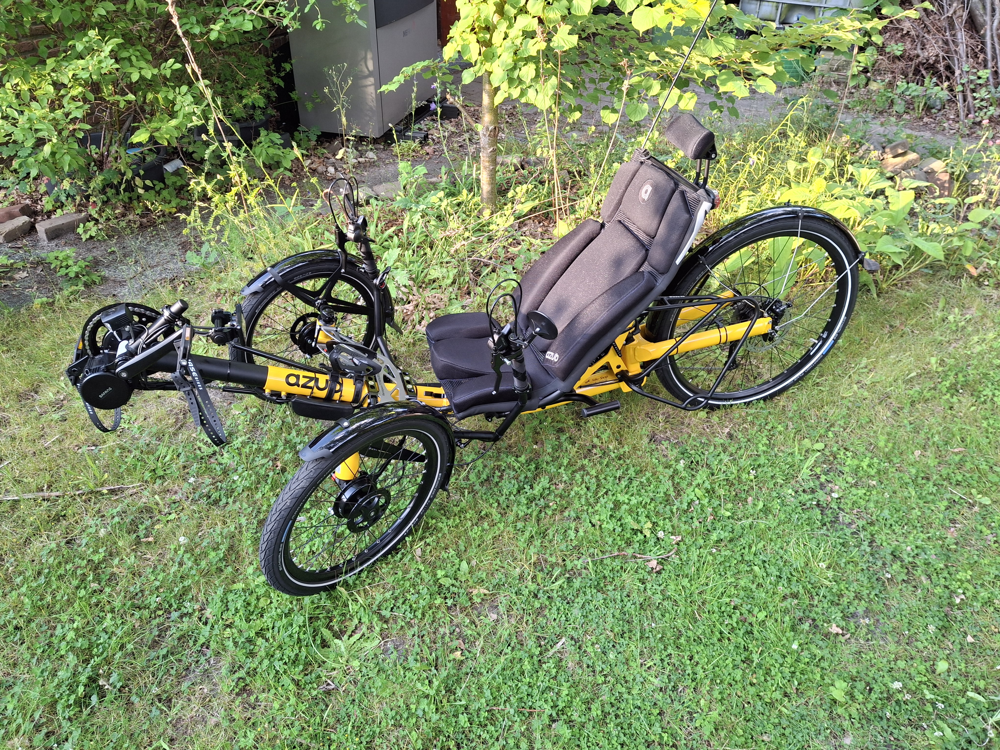
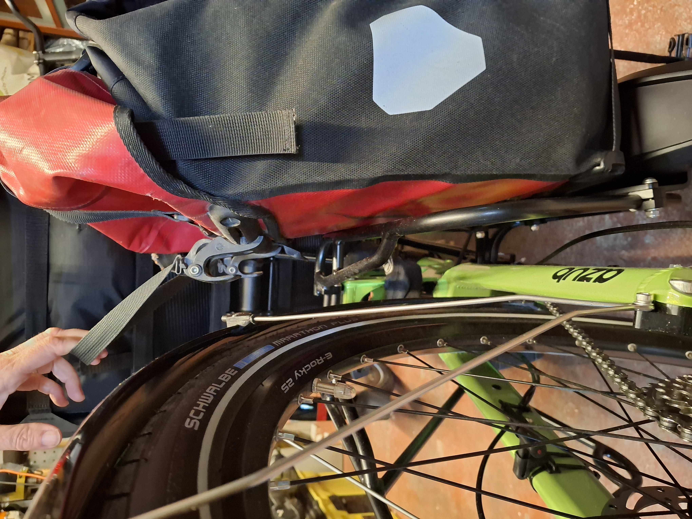
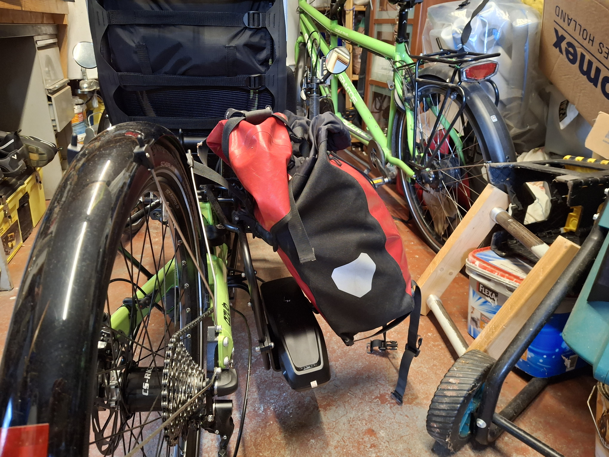
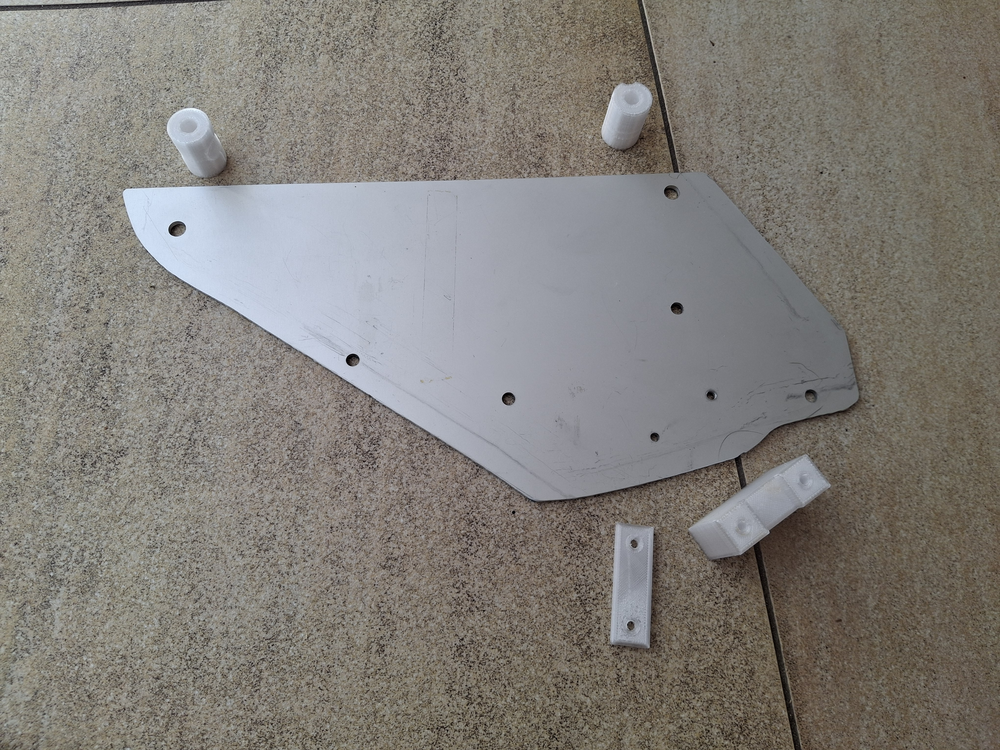
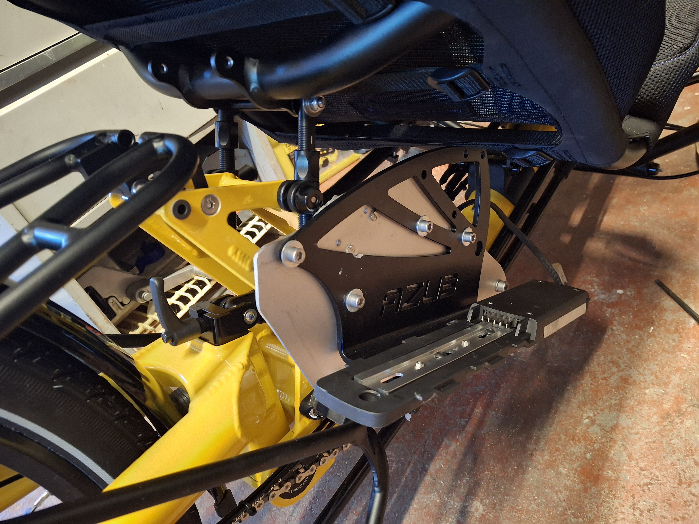
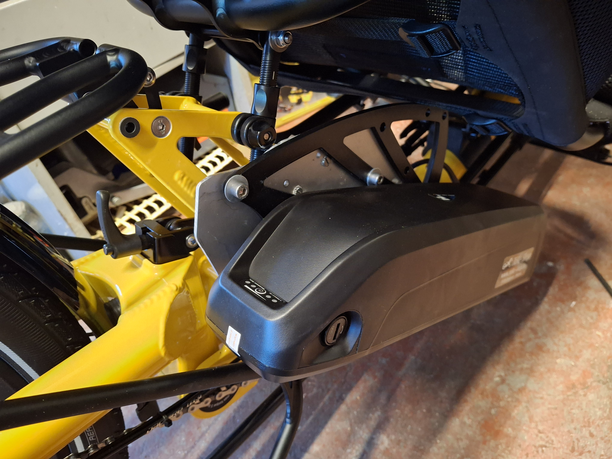
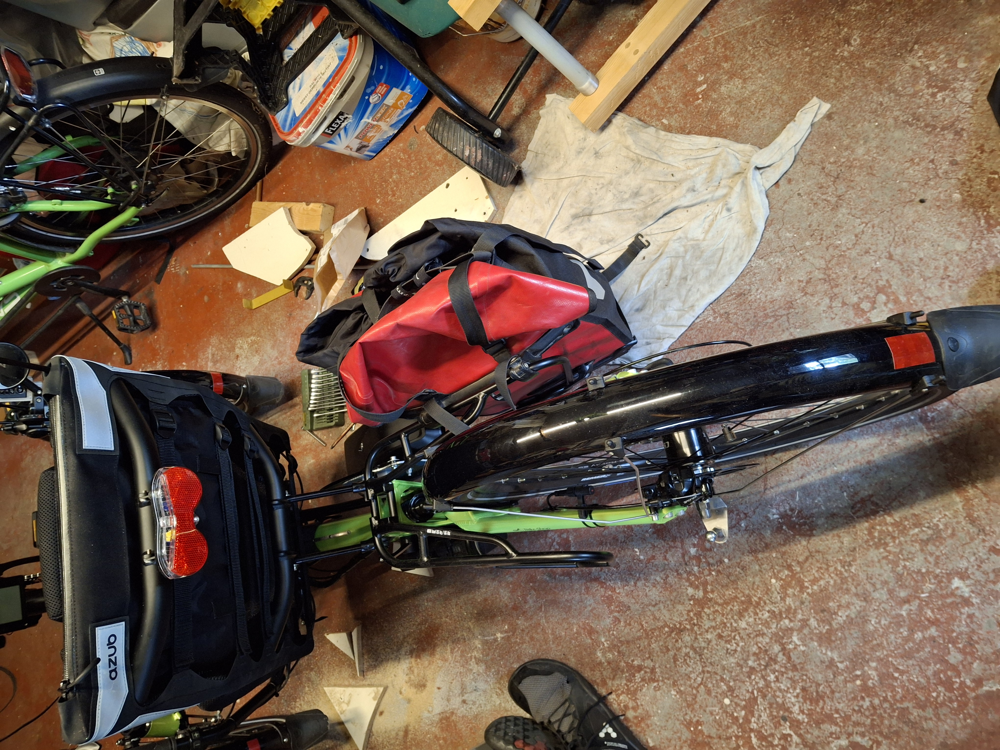

Voor onze gezamelijke vakanties hebben we sind 2026 deze prachtige Ti-Fly 26 van AZUB
Birgit kon dit jaar niet meer met de vouw fiets op vakantie gaan. Haar gezondheid was
teveel achteruit gegaan. Het grote probleem voor haar was het lange rechtop zitten.
Daarop kwamen we samen tot de conclusie dat een trike waarschijnlijk een goede
oplossing zou zijn. Gelukkig zit er op een uur rijden van ons huis een goed fietsen
handelaar die trikes verkoopt. Ik had de AZUB Ti-Fly 26 of de HP Velotechnik Scorpion FS 26
in gedachten of ICE advanture 26. Trike-Shop in Zonhoven in Belgie verkoop al deze merken
Alhoewel de ICE fietsen verkoop die niet meer zo vaak vanwege steeds veranderende
invoer rechten vanuit Engeland. Birgit ging eerst in de Scorpion zitten maar toen
ze in de Ti-Fly ging zitten kwam ze er niet meer uit.
Birgit heeft een groene besteld en ik een gele.

Na een paar dagen ontdekte Birgit dat we aan de rechterkant niet onze fiets tassen
mee konden nemen. De accu zit in de weg waardoor de tassen niet goed passen.
Zwevend

of schuin 
Ben toen eens gaan kijken op fotos op de website van AZUB en ontdekte het Bosch
systeem heeft de accu's net voor de drager zitten. Laat er nu in het frame 2 8mm gaten
zitten precies op die plek. Dus ben ik gaan hobbieen en heb een houder gemaakt
die precies in die gaten past. De bestaande bagage accu houder heb ik naar voren op een
adaptor plaat gezet. En heb met de 3D printer wat bevestigings dingen gemaakt.

De geprinte onderdelen zijn in OpenScad ontworpen en de scad file is hier beschikbaar.
3d model file
Het ontwerp in stl formaat wat handig is voor de 3d printer.
3d model stl
Ik heb de onderdelen met colorfabb XT filament geprint. Dit filament kan een iets
hogere temperatuur aan (75 graden) dan PLA (50 graden). Ik had nog een stuk 3mm
aluminium plaat liggen en heb toen een adapter gemaakt waarmee ik uit die ene plaat
2 adapters kon maken. Eerst het een en ander uitgeprobeerd op een stuk hardboard
en daarmee de gaten bepaald. Daarna heb ik dat hardboard gebruikt als mal om de 2 adapters
uit te zagen en daarna de gaten te boren. Zo zit de boel op de fiets gemonteerd:

En nu met de accu erin:

Nu past elke tas weer op de bagagedrager en kunnen we op vakantie met de trikes.
